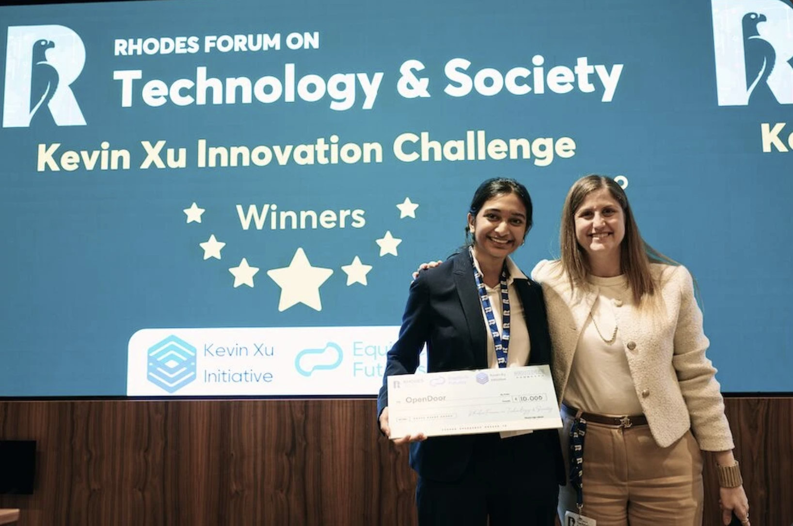
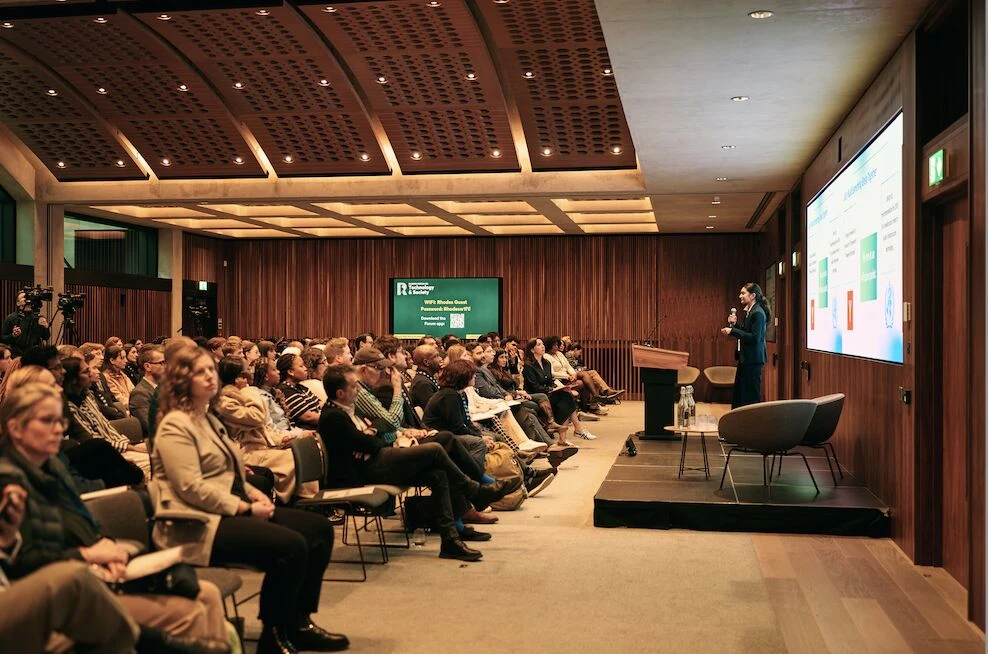
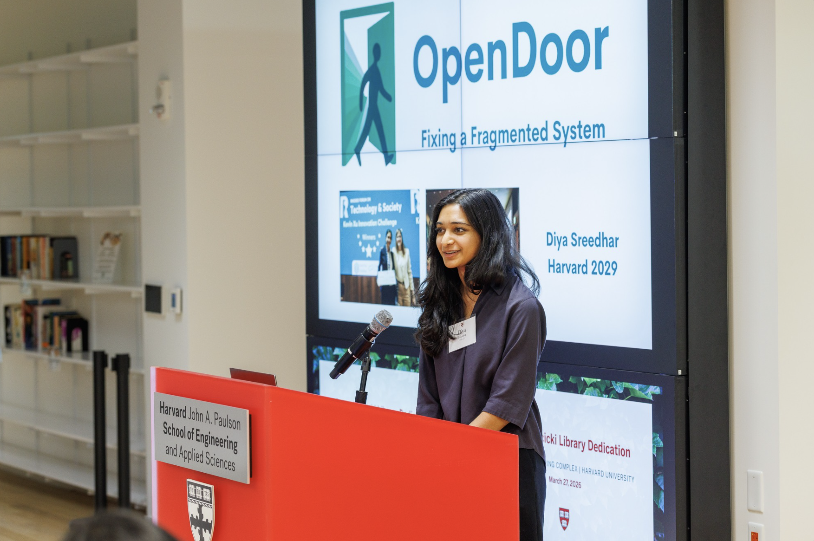

Currently


Previously


Research
-
") 2026
OrganoidAgent: an AI Scientist for Brain Organoids
2026
OrganoidAgent: an AI Scientist for Brain Organoids
OrganoidAgent is an AI scientist for brain organoid research. It reads organoid datasets such as the Human Neural Organoid Cell Atlas, generates its own hypotheses, designs follow-up experiments and runs some of them in simulation. I built it in Marinka Zitnik's lab, working with the Arlotta lab.
-
") 2026
ML Surrogate for Lipid-Bilayer Deformation
2026
ML Surrogate for Lipid-Bilayer Deformation
In the Computational Structural Biology Section at NINDS, I trained a machine-learning surrogate for lipid-bilayer deformation that runs about 104 times faster than the molecular dynamics it replaces. I used it in a membrane-protein pipeline over both experimental and AlphaFold structures, which lets the pipeline cover far more proteins than simulation alone. Best poster at NIH Summer Poster Day. With G. Fiorin, A. A. Aleksandrova and L. R. Forrest.
-
 2026
Biosecurity Evaluation of OpenAI's GPT-Rosalind
2026
Biosecurity Evaluation of OpenAI's GPT-Rosalind
CAISI ran the unclassified pre-release evaluation of GPT-Rosalind, OpenAI's biology-tuned frontier model. I built the harness that measured its gains over GPT-5 models on chemistry, molecular reasoning and experiment-design benchmarks, and designed task sets that score its responses to dual-use biology requests. CAISI uses these results in its recommendations on access controls for biology-capable models.
OpenAI and CAISI Rosalind ResearchOpenAI and CAISI Research Partnership
-
 2026
Natural Ungrokking: Which Rules Survive Pretraining
2026
Natural Ungrokking: Which Rules Survive Pretraining
In an 11.5M-parameter transformer trained with five seeds, three grammar capabilities rise early in pretraining, peak, then fall back toward chance, while word-level probes stay stable. Activation patching and head ablations show that each capability depends on a few early attention heads, which the model later reuses for other functions. Measuring emergence at one checkpoint can therefore miss capabilities a model learns and then loses.
-
 2026
Multimodal Foundation Models for Biomedical Imaging
2026
Multimodal Foundation Models for Biomedical Imaging
At the AIM Lab at Harvard Medical School, I analyzed cross-modal attention in a model that combines CT and MRI embeddings with clinical metadata. I found when each input drives a prediction and when disagreement between them predicts failure, and measured how multimodal pretraining changes calibration and worst-group robustness against imaging-only baselines. The paper proposes checks to run before clinical deployment.
-
 2025
Multi-Turn RL for Open-Source and Foundation Models
2025
Multi-Turn RL for Open-Source and Foundation Models
As an intern on the Amazon AGI team, I worked on multi-turn reinforcement learning methods for open source and foundation models. Standard RLHF scores each response on its own, so an early tool call earns no credit for the steps it makes possible three turns later. In multi-turn RL the reward is computed over the whole interaction, which is what trains tool orchestration, error recovery and multi-step reasoning. The target is agents that run long workflows, where one wrong early action spoils every step after it.
-
 2025
PROTON: Graph AI for Neurological Drug Repurposing
2025
PROTON: Graph AI for Neurological Drug Repurposing
PROTON is a 578M-parameter graph transformer trained on NeuroKG, a brain-biology knowledge graph with 147,020 nodes and 7.4 million edges. Researchers tested its drug-repurposing predictions in Parkinson's genetic screens, in patient-derived organoids for bipolar disorder, where calcitriol reversed changes in 73 proteins, and in records of 610,524 patients, where five predicted drugs were linked to lower seven-year dementia risk.
-
 2025
Distributed Fine-Tuning on AWS Trainium
2025
Distributed Fine-Tuning on AWS Trainium
I wrote the official fine-tuning notebook for Amazon's Build on Trainium workshop at NeurIPS 2025, a PyTorch workflow for distributed training and inference benchmarking on Trainium chips. Tuning it for Trainium's XLA compiler cut cold-start compile time about tenfold on the workshop model. Several hundred researchers ran it, and it is the starting point in the public aws-neuron/neuron-workshops repository.
-
 2025
Density Functional Theory for NASA's Lucy Mission
2025
Density Functional Theory for NASA's Lucy Mission
Through the NASA L'Space program, I ran about 600 density functional theory calculations with active learning to narrow about 10,000 candidate electrocatalyst compositions to a shortlist of 25. I then trained a graph neural network potential on the results that matched DFT energies and forces while running about 10,000 times faster. Our team's proposal ranked first of 100 student teams.
Entrepreneurship
-
 2025
OpenDoor
An AI platform that connects unhoused and underhoused people to the social services they qualify for.
2025
OpenDoor
An AI platform that connects unhoused and underhoused people to the social services they qualify for.
OpenDoor matches people to housing, healthcare, food assistance and job training without long waitlists or confusing eligibility paperwork. It combines a real-time service-matching engine, an AI caseworker that handles client follow-up, and a job-training agent for interview preparation and certifications.
OpenDoor won first place in the 2025 Kevin Xu Innovation Challenge at the Rhodes Forum on Technology & Society. The Rhodes Trust, with sponsors at Google and the Eric Schmidt Foundation, funded $50,000 to expand it, and it now works with more than 50 partner organizations in Los Angeles and Boston.



opendoor-tech.com EquiTech Futures profile Rhodes Trust announcement Equitech Futures announcement
Awards
-
2026 NCWIT Collegiate Award Finalist
One of 63 finalists from 47 institutions nationwide.
-
2026 CRA Outstanding Undergraduate Researcher
Selected from thousands of applications across North America.
-
2026 Y Combinator Fellowship
$90,000 in compute and research credits for LLM inference-time optimization research. Inaugural YC Fellows cohort.
-
2025 Kevin Xu Innovation Challenge, First Place
$15,000 (£10,000) prize for OpenDoor. First place out of 6 finalists and 12 semifinalist teams at the Rhodes Forum on Technology & Society in Oxford. Youngest winner in the challenge's history.
-
2025 GE-Reagan Foundation Scholarship
$40,000 scholarship, paid as $10,000 a year for four years. One of 10 scholars selected from about 16,000 applicants.
-
2025 Women at Microsoft Scholarship
$20,000 scholarship for women studying computing.
-
2025 Taco Bell Live Más Scholarship
$25,000 scholarship. Nearly 1,000 students received Live Más scholarships in 2025.
-
2025 AWS Startup Grant
$50,000 in compute and research credits for OpenDoor.
-
2024 ISEF American Statistical Association Special Award
Special award at ISEF 2024, where nearly 2,000 finalists from about 70 countries competed.
-
2024 USA Biology Olympiad Top 50
Top 50 students nationally.
-
2023 Rise Global Winner
One of 100 winners from 80,000 applicants worldwide. Winners can receive a need-based four-year college scholarship and apply for project funding.
-
2023 NJSHS First Grand Prize
$5,000 scholarship. First place in Computer Science and Math among 227 national competitors from 49 regional symposia.
Writing
- Teen VogueOp-ed: women have long been left out of scientific research.
- The Harvard CrimsonOp-eds and reporting on AI, health and campus policy.
- Americans for Responsible InnovationPolicy intern under Iskander Haykel. AI policy op-eds, including on recursive self-improvement.